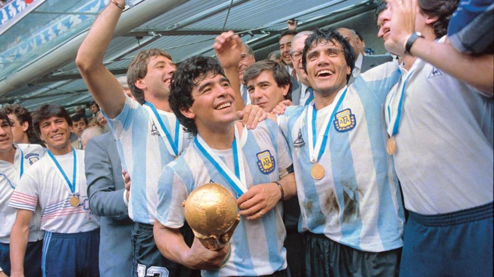
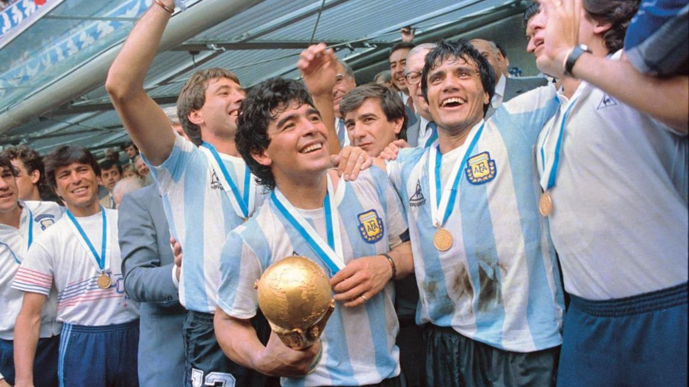

Mundial 1978 - Argentina se consagra en casa
En 1978, Argentina fue el anfitrión de la Copa del Mundo y vivió un torneo lleno de emoción y alegría. Bajo la dirección técnica de César Luis Menotti, la selección argentina logró un desempeño destacado en cada fase del torneo. Los jugadores emblemáticos como Mario Kempes, Daniel Bertoni y Ubaldo Fillol se convirtieron en figuras clave del equipo.
El camino hacia la final no fue fácil. Argentina superó la fase de grupos, enfrentándose a Hungría, Francia y a Italia en un emocionante empate 0-0. En la segunda ronda, lograron vencer a Brasil y a Polonia, asegurando su lugar en la final.
La gran final se llevó a cabo el 25 de junio en el Estadio Monumental de Buenos Aires, donde Argentina se enfrentó a los Países Bajos. Fue un partido intenso y parejo, con ambos equipos luchando por el título. Durante el tiempo reglamentario y el primer tiempo extra, el marcador se mantuvo 0-0.
Finalmente, en el segundo tiempo extra, Mario Kempes se convirtió en el héroe de Argentina al marcar dos goles decisivos. El primero llegó tras una gran jugada individual en la que eludió a varios defensores, y el segundo fue un disparo potente que dejó sin chances al arquero neerlandés. Con ese resultado, Argentina se consagró campeón del mundo por primera vez en su historia.
Mundial 1986 - La gloria de Maradona
El Mundial de 1986 en México es recordado como el torneo en el que Diego Maradona brilló con luz propia y llevó a la selección argentina a la gloria. Bajo la dirección técnica de Carlos Bilardo, el equipo argentino se enfrentó a grandes desafíos en su camino hacia el título.
Desde el inicio del torneo, Maradona dejó su huella en cada partido. Sus actuaciones fueron simplemente extraordinarias. El famoso "Gol del Siglo" contra Inglaterra en los cuartos de final, en el que Maradona eludió a varios jugadores ingleses antes de anotar, es considerado uno de los mejores goles en la historia de los mundiales.
En la final, Argentina se enfrentó a Alemania Occidental en el Estadio Azteca de la Ciudad de México. Fue un partido lleno de tensión y emoción. José Luis Brown abrió el marcador para Argentina en la primera mitad, pero Alemania empató rápidamente.
Sin embargo, a los pocos minutos, Jorge Valdano le dio a Argentina una ventaja que se mantuvo hasta el final. Aunque Alemania presionó en busca del empate, la defensa argentina liderada por Oscar Ruggeri y el arquero Nery Pumpido lograron mantener la ventaja y asegurar la victoria.
Argentina se consagró campeón del mundo por segunda vez en su historia, y Diego Maradona fue la gran figura del torneo, siendo reconocido como el mejor jugador del mundial.
Mundial 2022 - La resurrección de Argentina: El liderazgo de Messi hacia la gloria
En el Mundial 2022 en Catar, Argentina tuvo un comienzo difícil con una derrota en el primer partido de la fase de grupos. Sin embargo, el equipo se recuperó y mostró una notable mejora en su juego. Con Lionel Messi liderando el ataque, anotando goles y brindando asistencias clave, Argentina superó obstáculos en los octavos y cuartos de final.
En la gran final, Argentina se enfrentó a un equipo europeo igualmente talentoso. Fue un partido emocionante en el que Messi brilló con su magia en el campo. Después de un gol espectacular en la prórroga, Argentina defendió ferozmente su ventaja hasta el último segundo. Finalmente, se decidieron los penales y Gonzalo Montiel convirtió el tiro decisivo para coronar a Argentina como campeona del mundo.
Esta victoria histórica fue motivo de celebración en Argentina. Messi, como capitán y líder del equipo, fue reconocido como el alma y el corazón de esta conquista. Su habilidad excepcional y contribución vital lo consolidaron como una leyenda del fútbol y un ícono para su país.
El Mundial 2022 será recordado como un ejemplo de la resiliencia y determinación de Argentina. A pesar de los desafíos iniciales, el equipo se unió, luchó con pasión y alcanzó la cima del fútbol mundial, dejando una huella imborrable en la historia del deporte.